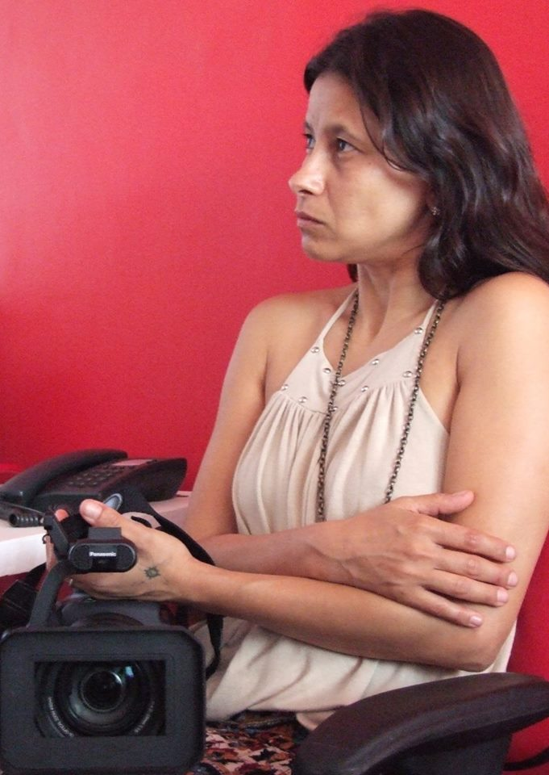

Funções / Exibição
As informações de cada perfil são de responsabilidade das profissionais.
Você quer conhecer profissionais de quais estados?
Marcar/Desmarcar todos
CARREGANDO ...
 Amanda Duarte (AL)
Amanda Duarte (AL)
Amanda Duarte
Maceió (AL)
amandad.mov@gmail.com
Comunicadora social com habilitação em Jornalismo, graduada pela Universidade Federal de Alagoas. Começou a se aproximar do Cinema e do Audiovisual em 2012 e, desde então, tem atuado nas áreas de produção, difusão e formação. É feminista, idealista social e militante cultural.
http://amandaduarte.jor.br
Outras atividades de Amanda Duarte
Assistência de Produção
|
Direção |
Oficinas e cursos livres |
Programação e curadoria |
Roteiro
Amostra de vídeo
 Amanda Lopes (SP)
Amanda Lopes (SP)
Amanda Lopes
34 anos | São Paulo (SP)
amanda_lopes0@hotmail.com
Formada em Administração de Empresas e professora de matemática. Atuei por 10 anos na área de Recursos Humanos. Graduanda do último ano em Comunicação Social com ênfase em Cinema. Persistente, bastante curiosa e proativa. Me sinto uma eterna aluna. Crio histórias há 20 anos, porém somente nos últimos 4 anos encarei o cinema e pude participar de mais de 25 curtas metragens. FIES, zero recursos, muita fé e alguns amigos, arrisquei nos meus projetos próprios. Empreendedora atualmente desenvolvo a plataforma Mulheres Audiovisual voltada para distribuição de filmes feitos por mulher e vagas direcionadas a esse público.
http://amandalopesfilmes.wixsite.com/portfolio
Outras atividades de Amanda Lopes
Assistência de Direção |
Captação de Recursos |
Coordenação de Projeto |
Direção |
Edição |
Oficinas e cursos livres
|
Produção |
Programação e curadoria |
Roteiro
Amostra de vídeo
 Anna Andrade (PE)
Anna Andrade (PE)
Anna Andrade
32 anos | Recife (PE)
anna.andrade@gmail.com
Bacharel em Produção Cultural (IFRJ) e Pós Graduanda em Gestão de Projetos (FG), é produtora cultural independente e atua nas áreas de audiovisual, literatura e música. No Audiovisual, trabalhou como produtora do longa-metragem "A Noite Escura da Alma" (Henrique Mendes Dantas, BA, 2015) e dos curtas-metragem "Avenida Presidente Kennedy" (2014), "Milagres" (2015) e "Frequências" (2016), dirigidos por Adalberto Oliveira (PE). Também traduziu e legendou os curtas "Tarja Preta" (Márcio Farias, PE, 2015), e "Os Filmes que Moram em Mim" (Caio Sales PE, 2015) . Atualmente está na pré produção de seu primeiro curta metragem, "Entremarés", aprovado no 9º Edital Funcultura Audiovisual.
https://www.facebook.com/milagresdoc/
Outras atividades de Anna Andrade
Captação de Recursos |
Coordenação de Projeto |
Direção |
Legendagem |
Produção
Carem Abreu (MG)
Carem Abreu
46 anos | Belo Horizonte (MG)
caremabreu@gmail.com
Cineasta, jornalista e capoeirista angoleira. Atuo desde 1996 nos setores Audiovisual e de Culturas Populares como Pesquisadora, Gestora Cultural, Diretora, Roteirista, Produtora Executiva, de Elenco e de Set. Idealizadora da Mostra CineAfroBH.
ATUAÇÃO PROFISSIONAL: ATOS CENTRAL DE IMAGENS. youtube.com/user/atosimagens
Desde 2007: Produtora Executiva, Diretora e Roteirista Atuais 2015: produção executiva do filme e seriado CIDADE DO SOL (Ação, 2015MG, Guto Aeraphe) webseriados.tv (vimeo.com/ondemand/webseriecidadedosol).
PRÊMIO: novembro 2015 Edital de Intercâmbio do MINC > Oficina de Produção Audiovisual em DAKAR, Senegal, na Associação Batuk de Comunicação e Cultura.
http://www.mostracineafrobh.com
Outras atividades de Carem Abreu
Direção |
Ensino superior |
Oficinas e cursos livres |
Pesquisa e desenvolvimento |
Produção |
Produção executiva |
Roteiro
Amostra de vídeo
 Carine Fiúza (PB)
Carine Fiúza (PB)
Carine Fiúza
27 anos | João Pessoa (PB)
carinefiuza@gmail.com
Graduanda em Rádio e Tv na Universidade Federal da Paraíba e colaboradora no Laboratório Audiovisual de Produção - LAP que integra o departamento de Cinema e Comunicação da UFPB. Concluiu os curso técnicos de Direção, Ass. de direção e Produção executiva pelo CANNE. Atualmente é Produtora, diretora e fotografa freelancer. Ministra cursos livres de cinema e audiovisual. Como diretora elenca os trabalhos: No escuro (2009), Autonomia Mulheres Rurais (2014), Campanha contra lesbofobia (2016); Como produtora: “Capela” (2014), “O Lendário…” (2014), “Ilha” (2014), “Nó do diabo” (2017). Além dos DVDs de “Chico César” para o Canal Brasil e o “Quinteto convida” para Tv UFPB.
https://www.facebook.com/carine.fiuza.3
Outras atividades de Carine Fiúza
Assistência de direção |
Assistência de fotografia |
Cineclubismo |
Coordenação de projeto |
Direção |
Fotografia still |
Gerência de mídia |
Oficinas e cursos livres |
Pesquisa e desenvolvimento |
Produção
Amostra de vídeo
 Deka Carvalho (SP)
Deka Carvalho (SP)
Deka Carvalho
36 anos | São Paulo (SP)
kilometroprodutora@gmail.com
Sou Deka Carvalho, 36 anos, mãe, preta, favelada, produtora de videos e fotos. Sou responsável pelo audiovisual no estado da CUFA SP (Central Única das Favela de São Paulo) , sou proprietária da produtora Kilômetro na zona leste de São Paulo. Meu objetivo é mostrar o território favela no seu melhor contexto verdadeiro e nos colocarmos como protagonistas em todas as esferas.
https://www.facebook.com/kilometroprodutora/
Outras atividades de Deka Carvalho
Assistência de Direção |
Direção |
Direção de Arte |
Edição |
Pesquisa e desenvolvimento |
Preparação de Elenco |
Produção |
Produção Executiva |
Roteiro
Amostra de vídeo
 Keila Serruya (AM)
Keila Serruya (AM)
Keila Serruya
Manaus (AM)
keilaserruya@gmail.com
Manauara, produtora, artista audiovisual. Formada em comunicação social - Centro Universitário do Norte UNINORTE ( Bolsista integral do Programa Universidade para Todos - ProUni), atualmente cursa Pós Graduação em Gestão Cultural na Universidade Estadual do Amazonas UEA. Diretora de obras audiovisuais “Nessa Cidade Todo Mundo Já Bebeu na Bica” e “ASSIM”, que circularam em festivais nacionais e internacionais e hoje estão sendo exibidas em TV Fechada | Como artista visual traz a linguagem cinematográfica para espaços urbanos, galerias e utiliza a arte como ferramenta política de debate e defesa. Também concebe vídeo instalações para palcos em shows e espetáculos de dança. | Assistente de direção e diretora de produção em séries, curtas, espetáculos, intervenções, festivais e mostras | Atualmente faz parte do grupo Picolé da Massa.
Download Currículo
Outras atividades de Keila Serruya
Assistência de Direção |
Cineclubismo |
Continuidade |
Direção |
Edição |
Fotografia Still |
Pesquisa e desenvolvimento |
Produção
Amostra de vídeo
 Lygia Pereira (SP)
Lygia Pereira (SP)
Lygia Pereira
24 anos | Campinas (SP)
lygiapsc@gmail.com
Graduanda do último semestre do curso de Midialogia na Unicamp, possui experiência em produções audiovisuais (captação de imagem, direção e produção), sobretudo em documentários. Atuou na direção, roteiro e montagem do curta "CEP 05300"; na assistência de produção do documentário "Jogo Truncado", produzido pelo Canal Futura; na co-edição do coletivo de mídia independente Ô, Xavante!. Possui experiência com produção cultural, tendo trabalhado na 7ª Bienal de dança do Sesc de Campinas.